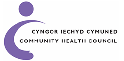

The Cancer Patient Survey
About us
If you've experienced the NHS Cancer service we'd like your feedback to improve the quality of the service that we provide to patients
You'll be provided with unique login details to allow you to provide feedback on the service
response is taken into consideration, you may be contacted individually to allow us to follow up on the matter at hand.
For any questions please use the contact form, response will depend on the query.
Thank you.
In partnership
Our vibrant start-up environment is furnished with innovative tech solutions and plenty of collaborative spaces to inspire teamwork and creativity.
We are in Newport's Information Station based on the recommendations of a task force set up by the Welsh Government.
Cardiff University's investment in the area will help to regenerate the economy of the City of Newport and provide a pipeline of skilled software engineers in Wales.
The South Glamorgan CHC was established in April 2010 following the reorganisation of Community Health Councils in Wales - we represent the interests of the patients and public of Cardiff and the Vale of Glamorgan in relation to local health services.
Health Councils (CHC) are the independent voice of people in Wales who use NHS services - we are made up of local volunteers who act as the eyes and ears of patients and the public.
